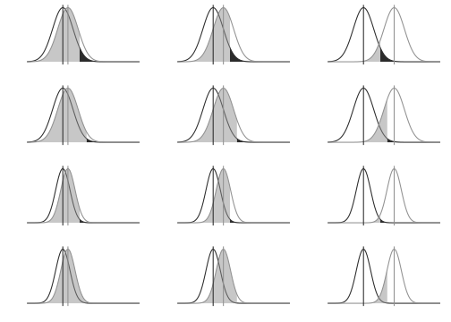

Capítulo 14 Tamaño del efecto
14.1 Significación estadística y significación práctica
El procedimiento de prueba de hipótesis concluye con la aseveración acerca del rechazo o no de la hipótesis nula. Esto se hace observando cuán probable es hallar los resultados muestrales bajo el supuesto de \(H_0\) verdadera. El valor \(p\) es una medida de esa probabilidad, por eso es que cuando es pequeño, la decisión es rechazar \(H_0\) y decimos que el resultado (la diferencia, el coeficiente, o lo que sea que se haya puesto a prueba) es significativo, o significativamente distinto de cero.
Sin embargo, que una prueba haya dado significativa no implica directamente que el resultado tenga interés práctico. Como se vio en el cálculo de la potencia, un tamaño de muestra grande, puede detectar diferencias muy pequeñas que quizá en la práctica tengan poco interés. La palabra significación contribuye a la confusión, porque en el lenguaje cotidiano, una diferencia significativa a menudo quiere decir una diferencia importante. La significación estadística, como hemos visto, es otra cosa y puede suceder que una prueba dé significativa pero la diferencia sea insignificante.
Por eso es necesario introducir otro concepto; el de tamaño del efecto. Se trata de una cuantificación de lo importante que es una diferencia o un coeficiente, luego de haber obtenido un resultado significativo en la prueba de hipótesis. Conocer el tamaño del efecto es absolutamente necesario para interpretar los resultados de una investigación. La APA (2010) destaca que “las pruebas de hipótesis no son sino el punto de partida y se requiere informar elementos adicionales tales como tamaños del efecto, intervalos de confianza y descripciones extensivas” (p. 33, traducción del autor).
Las medidas de tamaño del efecto expresan de manera estandarizada cuán diferente de cero es una diferencia o un coeficiente. Que estén estandarizadas permite dos cosas: evaluarlas en su magnitud, dados ciertos criterios; y comparar efectos entre experimentos diseñados de manera diferente, por ejemplo con distintos tamaños de muestra, lo cual permite el meta-análisis96. Para decidir cuándo un efecto es grande mediano o pequeño, existen criterios, casi todos propuestos por Cohen (1988), quien es autor también de la mayoría de las medidas de tamaño del efecto.
14.2 Medidas de tamaño del efecto
Hay una gran diversidad de medidas del tamaño del efecto, Kirk (1996) las estima en más de setenta, y Ellis (2010) las clasifica en dos familias: las medidas de diferencias entre grupos y las medidas de asociación. Para esta presentación, elegiremos algunas medidas de uso difundido y sugerimos Ellis (2010), así como Cumming (2012) para una descripción más detallada. Las siguientes son las medidas que más se usan para evaluar el tamaño del efecto, según cuál sea la prueba que se haya realizado.
14.2.1 Prueba t para diferencia de medias
Conocido como d de Cohen, se define como:
\[\frac{{\overline{x}}_{1} - {\overline{x}}_{2}}{s_{\text{comb}}}\]
Y mide la distancia entre las medias observadas, expresada en términos de la desviación estándar combinada de los dos grupos. Cohen (1988) sugiere que valores de \(d\) de 0.20, 0.50, y 0.80 indican tamaños de efecto: pequeño, mediano y grande respectivamente. Medidas alternativas al d de Cohen son delta de Glass y g de Hedge, que difieren en el modo de calcular el denominador de la expresión anterior, pero conceptualmente consisten también en una estandarización de la diferencia observada.
14.2.2 Análisis de la varianza
La medida se llama f de Cohen y se define así:
\[f = \sqrt{\frac{\sum_{i = 1}^{k}{p_{i}*{({\overline{x}}_{i} - \overline{\overline{x}})}^{2}}}{s_{res}^{2}}}\]
En la que las \(p_{i}\) de la fórmula representan la proporción de casos en cada grupo que se compara. Los valores sugeridos por Cohen son 0.10, 0.25, y 0.40 para efectos de tamaño pequeño, mediano y grande respectivamente. Otras medidas usadas en ANOVA son \(\eta^{2}\) (eta cuadrado) y \(\varepsilon^{2}\) (épsilon cuadrado). La relación entre \(\eta\) y \(f\) es \[f=\sqrt\frac{\eta^2}{1-\eta^2}\]
14.2.3 Correlaciones
El coeficiente de correlación es una medida estandarizada y se usa como medida del tamaño del efecto, es decir, de la magnitud de la asociación. Cohen considera que un efecto grande corresponde a \(r = 0.50\), mediano a \(r = 0.30\) y pequeño \(r = 0.10\).
14.2.4 Regresión lineal
La medida estandarizada para evaluar la calidad de un modelo lineal es:
\[f^{2} = \frac{R^{2}}{1 - R^{2}}\]
Es una medida de tamaño del efecto alternativa al el coeficiente general de correlación \(R^{2}\). Cohen fija en 0.02, 0.15 y 0.35 los criterios de pequeño, mediano y gran efecto.
14.2.5 Pruebas ji cuadrado
Se utiliza la medida definida como:
\[w = \sqrt{\sum_{i = 1}^{m}\frac{{(f_{i}^{e} - f_{i}^{e1})}^{2}}{f_{i}^{e}}}\]
En la que \(f_{i}^{e}\) y \(f_{i}^{e1}\) son las frecuencias relativas esperadas en la celda i bajo \(H_0\) y \(H_1\) respectivamente.
14.3 Análisis de la potencia
El cálculo del tamaño del efecto permite entonces comparar resultados de diferentes diseños experimentales y evaluar si un efecto es grande o pequeño. Este es el análisis a posteriori, luego de haber realizado las pruebas y haber hallado resultados estadísticamente significativos. Cuando se trató la potencia de la prueba, se indicó que ésta crece a medida que la diferencia entre el valor hipotético y el verdadero valor del parámetro se agranda, es decir que si el valor real difiere mucho del valor hipotético (tamaño del efecto grande), la probabilidad de rechazar la hipótesis nula es también grande (potencia alta).
También participa de esta relación el tamaño de la muestra, ya que si la muestra es de mayor tamaño, las varianzas de los estimadores se reducen (por su propiedad de ser consistentes) y el área que corresponde a la potencia aumenta. Es decir que muestras grandes dan lugar a mayor probabilidad de rechazar hipótesis nulas falsas, dicho de otra manera, las muestras grandes tienen más probabilidad de detectar diferencias, aunque éstas sean pequeñas. Esto conduce a que muestras muy grandes pueden dar resultados significativos aunque las diferencias sean ínfimas, por eso es muy necesario informar el tamaño del efecto para que se pueda tener una interpretación correcta de los resultados.
Aún queda un componente más en esta relación: la probabilidad de cometer error de tipo I, es decir la significación de la prueba. Si esta es muy pequeña, fijada así para reducir el riesgo de rechazar una hipótesis nula que sea verdadera, entonces también decrece la potencia, es decir, se vuelve más probable aceptar una hipótesis nula que es falsa y así pasar por alto un resultado que podría haber sido detectado.
Son entonces cuatro los elementos que interactúan: potencia, significación, tamaño del efecto y tamaño de la muestra. Si se establece a priori i) cuál es el tamaño del efecto que se quiere detectar (grande, mediano o pequeño), ii) qué riesgo de rechazar una hipótesis nula que es verdadera se está dispuesto a correr (significación) y iii) qué probabilidad de detectar diferencias se pretende (potencia); entonces el tamaño de la muestra queda fijado. Análogamente, si se tiene un número de casos dado y se fija la potencia y la significación, se puede calcular el tamaño del efecto que la prueba será capaz de detectar. Así, con tres de los elementos mencionados, queda determinado el cuarto. Las previsiones sobre la relación entre estos cuatro elementos se conocen como análisis de la potencia y es una parte importante del diseño de una investigación, porque sirve para calcular a priori el tamaño de muestra requerido para detectar un determinado tamaño de efecto con un nivel de significación dado. Si el tamaño de muestra está fijado (por presupuesto o tiempo), el análisis de la potencia permite saber qué probabilidad hay de detectar un determinado tamaño del efecto. También es posible establecer cuál es la potencia que deseamos para nuestro estudio o, al revés, qué probabilidad de cometer Error de Tipo II (no rechazar una \(H_0\) que es falsa) estamos dispuestos a asumir.
Los gráficos siguientes ilustran la relación entre estos elementos para diferentes combinaciones de tamaño del efecto, nivel de significación y tamaño de muestra. Las áreas sombreadas más claro corresponden a la probabilidad de cometer Error de Tipo II (el complemento de la potencia), las oscuras a la probabilidad de cometer Error de Tipo I (el nivel de significación), la distancia entre los centros de las campanas representa el tamaño del efecto, la diferente amplitud de las campanas indica la diferente varianza según el tamaño de la muestra.

14.4 Hacerlo en R
Las relaciones entre el tamaño de muestra, la potencia, el tamaño del efecto y el nivel de significación dependen de cuál sea el tipo de estudio planteado y cuál la medida de tamaño del efecto elegida. Eso hace que las operaciones para calcular uno de ellos conociendo los otros tres, sean complejas. En el capítulo 12 se construyeron las curvas de potencia para diferentes valores de la hipótesis alternativa (es decir del verdadero valor del parámetro) y diferentes tamaños de muestra. Sin embargo, esos cálculos dependen de los valores concretos de los parámetros (en particular, de las diferencias entre el valor paramétrico que sostiene \(H_0\) y el que sostienen las diferentes alternativas \(H_k\)); ahora, con el tamaño del efecto estandarizado, solo hace falta saber qué prueba se realiza para obtener la curva de potencia.
Si bien existen calculadoras on line97, es recomendable, por su
flexibilidad, usar el paquete pwr (Champely 2018) en R. Este conjunto
de rutinas genera, para cada prueba estadística, uno de los cuatro
valores a partir de los otros tres. Para estimar a priori el tamaño de muestra, hay que establecer: el tipo de prueba, el nivel de significación, la potencia que se espera y el tamaño del efecto que se puede detectar. Por ejemplo, ¿Cuántos casos hacen falta en cada grupo si se va a realizar una prueba t unilateral derecha, a un nivel de significación del 5%, y se requiere una probabilidad 0.80 (potencia) de detectar un efecto grande (d=0.85)? Ese es el modo en que debe formularse la pregunta para encontrar uno de los cuatro valores que interjuegan.
Primero se instala el paquete y se carga en la sesión:
Las convenciones estándar propuestas por Cohen1988 se solicitan con el comando cohen.ES, al que debe indicarse qué prueba es (las opciones son: “p”, “t”, “r”, “anov”, “chisq”, “f2”) y la magnitud del efecto (con opciones: “small”, “medium”, “large”). Por ejemplo, un tamaño del efecto grande para una prueba t es:
##
## Conventional effect size from Cohen (1982)
##
## test = t
## size = large
## effect.size = 0.80.80.
Para el cálculo del tamaño del efecto, de la potencia, del tamaño muestral o de la significación, primero se elige el tipo de prueba; para una prueba t el comando es pwr.t.test, y se indican, además de la lateralidad de la prueba, los valores de tres de los siguientes cuatro elementos:
- significación (\(sig.level\))
- potencia (\(power\))
- tamaño del efecto (\(d\))
- tamaño de la muestra (\(n\)).
Uno de ellos debe quedar sin mención (o como “NULL”), y ese es el que se calcula como función de los demás.
Para conocer el tamaño de la muestra a partir del tamaño del efecto, la potencia y la significación en una prueba unilateral derecha (no se nombra \(n\)):
##
## Two-sample t test power calculation
##
## n = 17.83127
## d = 0.85
## sig.level = 0.05
## power = 0.8
## alternative = greater
##
## NOTE: n is number in *each* groupPara lograr detectar el mismo tamaño de efecto con una muestra de 25 casos:
##
## Two-sample t test power calculation
##
## n = 25
## d = 0.85
## sig.level = 0.05
## power = 0.9061755
## alternative = greater
##
## NOTE: n is number in *each* groupLa probabilidad de detectarlo (la potencia) aumenta a 0.90.
El comando pwr.t.test sirve para pruebas t de una muestra, de diferencia de medias independientes y apareadas, se debe indicar el tipo de prueba en el argumento type, con opciones “two.sample” (dos muestras independientes), “one.sample” (una muestra), “paired” (apareadas). Por ejemplo, para conocer la potencia que tiene una prueba de comparación de medias provenientes de muestras independientes para detectar un efecto de tamaño 0.3, si los grupos tienen 25 casos cada uno, se realiza una prueba bilateral, a un nivel de significación de 0.01. Se solicita:
pwr.t.test(n = 25, d=0.3, sig.level = 0.01, power = NULL,
type = "two.sample", alternative = "two.sided")##
## Two-sample t test power calculation
##
## n = 25
## d = 0.3
## sig.level = 0.01
## power = 0.06057469
## alternative = two.sided
##
## NOTE: n is number in *each* groupSi ahora se quisiera, para la misma prueba, elevar la potencia a 0.10, el número de casos requerido es:
##
## Two-sample t test power calculation
##
## n = 38.87894
## d = 0.3
## sig.level = 0.01
## power = 0.1
## alternative = two.sided
##
## NOTE: n is number in *each* groupHacen falta casi 40 casos en cada grupo.
Para el Análisis de la Varianza, se agrega como dato requerido, el numero de grupos de comparación. Si se trata de cuatro grupos a un nivel de 5%, para tener una probabilidad de 0.50 (potencia) detectar un efecto de tamaño 0.2, se requieren:
##
## Balanced one-way analysis of variance power calculation
##
## k = 4
## n = 36.9917
## f = 0.2
## sig.level = 0.05
## power = 0.5
##
## NOTE: n is number in each group37 casos en cada uno de los grupos. Pero si solo se cuenta con 15 casos en cada grupo, entonces el tamaño del efecto que se puede detectar con probabilidad 0.50 es:
##
## Balanced one-way analysis of variance power calculation
##
## k = 4
## n = 15
## f = 0.3208032
## sig.level = 0.05
## power = 0.5
##
## NOTE: n is number in each groupEs de 0.32.
El vídeo tamaño del efecto, en https://youtu.be/s2nGqz5Nh4A ofrece detalles adicionales sobre el uso del paquete pwr en el entorno RStudio.
Albers, Craig A, and Adam J Grieve. 2007. “Review of Bayley Scales of Infant and Toddler Development–Third Edition.” Journal of Psychoeducational Assessment 25 (2): 180–90. https://doi.org/10.1177/0734282906297199.
Alvarado, Hugo, and Carmen Batanero. 2007. “Dificultades de Comprensión de la Aproximación Normal a la Distribución Binomial.” NÚMEROS, Revista Digital de Educación Matemática., no. 67. http://www.sinewton.org/numeros/numeros/67/ideas{\_}01.php.
Anscombe, Francis J. 1973. “Graphs in Statistical Analysis.” The American Statistician 27 (1): 17–21.
APA. 2010. Publication manual of the American Psychological Association. Edited by American Psychological Association. 6th ed. Washington, DC.
Ballot, Daynia E, Tanusha Ramdin, David Rakotsoane, Faustine Agaba, Victor A Davies, Tobias Chirwa, and Peter A Cooper. 2017. “Use of the Bayley Scales of Infant and Toddler Development, Third Edition, to Assess Developmental Outcome in Infants and Young Children in an Urban Setting in South Africa.” International Scholarly Research Notices 2017: 1631760. https://doi.org/10.1155/2017/1631760.
Begué, Carolina, Mariana Galante, and Magalí Gaudio. 2013. “Tercera Encuesta Nacional de Factores de Riesgo.” Buenos Aires. http://www.msal.gob.ar/images/stories/bes/graficos/0000000544cnt-2015{\_}09{\_}04{\_}encuesta{\_}nacional{\_}factores{\_}riesgo.pdf.
Bethlehem, Jelke. 2009. “The rise of survey sampling.” Statistics Netherlands, no. 09015: 1–28.
Bologna, Eduardo Leon. 2018. Métodos Estadísticos de Investigación. Córdoba: Brujas.
Box, George E. P., and Norman R. Draper. 1987. Empirical Model-Building and Response Surfaces (Wiley series in probability and mathematical statistics). Edited by John Wiley & Sons. New York: Wiley.
Cepeda-Cuervo, Edilberto, Wilson Aguilar, Víctor Cervantes, Martha Corrales, Iván Díaz, and Diana Rodríguez. 2008. “Intervalos de confianza e intervalos de credibilidad para una proporción.” Revista Colombiana de Estadistica 31 (2): 211–28.
Champely, Stephane. 2018. Pwr: Basic Functions for Power Analysis. https://CRAN.R-project.org/package=pwr.
Clopper, C. J., and E. S. Pearson. 1934. “The use of confidence or fiducial limits illistrated in the case of the binomial.” Biometrika 26 (4): 404–13. https://doi.org/10.1093/biomet/26.4.404.
Cohen, Jacob. 1988. Statistical Power Analysis for the Behavioral Sciences (2nd Edition). Lawrence Erlbaum Associates.
———. 1994. “The earth is round (p<.05).” American Psychologist 49 (12): 997–1003. https://doi.org/10.1037/0003-066X.49.12.997.
Cumming, Geoff. 2012. Understanding the New Statistics: Effect Sizes, Confidence Intervals, and Meta-Analysis. Multivariate Applications Book Series. Routledge. https://books.google.com.ar/books?id=AVBDYgEACAAJ.
Dziula, Cecilia Erica, and Cecilia Erica Reyna. 2005. “Tolerancia rápida a los efectos del etanol en ratas periadolescentes : efectos diferenciales sobre patrones térmicos y de conducta exploratoria.” Universidad Nacional de Córdoba. http://ffyh.biblio.unc.edu.ar/cgi-bin/koha/opac-detail.pl?biblionumber=71157.
Economist Intelligence Unit. 2011. “Democracy Index 2011.” London: EIU. https://ictlogy.net/bibliography/reports/projects.php?idp=2065.
Ellis, Paul D. 2010. The Essential Guide to Effect Sizes: Statistical Power, Meta-Analysis, and the Interpretation of Research Results. Cambridge University Press. https://doi.org/10.1017/CBO9780511761676.
Estadísticas Universitarias, Programa de. 2015. Anuario Estadístico 2015. Córdoba: Secretaría de Asuntos Académicos. Univeridad Nacional de Córdoba.
Fisher, Ronald Aylmer. 1925. Statistical methods for research workers. London: Oliver & Boyd.
Furlan, Luis Alberto, María José Ferrero, and Gabriela Gallart. 2014. “Ansiedad Ante Los Exámenes, Procrastinación Y Síntomas Mentales En Estudiantes de La Universidad Nacional de Córdoba.” Revista Argentina de Ciencias Del Comportamiento. https://www.redalyc.org/articulo.oa?id=333432764005.
Galton, Francis. 1877. “Typical laws of heredity.” Nature 15. http://galton.org/bib/JournalItem.aspx{\_}action=view{\_}id=61.
Gaunt, John. 1662. Natural and Political Observations Mentioned in the following INDEX and made upon the Bills of Mortality. Edited by Royal Society. London: John Martin.
Gelman, Andrew, and Hal Stern. 2006. “The Difference Between ‘Significant’ and ‘Not Significant’ Is Not Itself Statistically Significant.” The American Statistician 60 (4): 328–31. https://doi.org/10.1198/000313006X152649.
Gerber, Alan S., Gregory A. Huber, David Doherty, and Conor M. Dowling. 2016. “Why People Vote: Estimating the Social Returns to Voting.” British Journal of Political Science 46 (2): 241–64. https://doi.org/10.1017/S0007123414000271.
Gerber, Alan S., Gregory A. Huber, David Doherty, Conor M. Dowling, Connor Raso, and Shang E. Ha. 2011. “Personality Traits and Participation in Political Processes.” The Journal of Politics 73 (3): 692–706. http://www.jstor.org/stable/10.1017/s0022381611000399.
Gertler, Paul J., Sebastian Martinez, Patrick Premand, Laura B. Rawlings, and Christel M. J. Vermeersch. 2017. La evaluación de impacto en la práctica. Edited by Banco Interamericano de Desarrollo y Banco Mundial. Segunda. Wahington, DC.
Goedhart, Joachim. 2018. “Make a difference: the alternative for p-values.”
Gómez, Alicia, Gustavo Álvarez, and Silvia Mario Fernanda. 2004. “El estudio de la pobreza según el Censo Nacional de Población, Hogares y Viviendas 2001 Metodología de elaboración del Índice de Privación Material de los Hogares (IPMH).” https://www.indec.gob.ar/ftp/cuadros/sociedad/metodologia{\_}ipmh{\_}2016.pdf.
Greenland, Sander. 2019. “Valid P-Values Behave Exactly as They Should: Some Misleading Criticisms of P-Values and Their Resolution with S-Values.” The American Statistician 73 (sup1): 106–14. https://doi.org/10.1080/00031305.2018.1529625.
Hacking, Ian. 2006. The Emergence of Probability: A Philosophical Study of Early Ideas About Probability, Induction and Statistical Inference. 2nd ed. Cambridge University Press. https://doi.org/10.1017/CBO9780511817557.
Halsey, Lewis G. 2019. “The reign of the p-value is over: What alternative analyses could we employ to fill the power vacuum?” Biology Letters 15 (5). https://doi.org/10.1098/rsbl.2019.0174.
Ihaka, Ross, and Robert Gentleman. 1996. “R: a language for data analysis and graphics.” Journal of Computational and Graphical Statistics 5 (3): 299–314.
INDEC. 2003. “EPH-Cambios Metodologicos 2003.” https://www.indec.gob.ar/ftp/cuadros/sociedad/Gacetilla{\_}EPHContinua.pdf.
———. 2013. “Encuesta Nacional de Factores de Riesgo 2013 Documento para la utilización de la base de datos usuario.” https://www.indec.gob.ar/ftp/cuadros/menusuperior/enfr/doc{\_}base{\_}usuario{\_}enfr2013.pdf.
Indec. 2008. “Encuesta Nacional sobre Prevalencias de Consumo de Sustancias Psicoactivas - ENPreCoSP-2008.” http://www.indec.gov.ar/.
———. 2008. “Documento para la utilización de la base de datos usuario ENPreCoSP.”
———. 2011. “Encuesta Permanente de Hogares Conceptos de Condición de Actividad, Subocupación Horaria y Categoría Ocupacional.” Buenos Aires: INDEC. https://www.indec.gov.ar/ftp/cuadros/menusuperior/eph/EPH{\_}Conceptos.pdf.
Inglehart, Ronald, and David Appel. 1989. “The Rise of Postmaterialist Values and Changing Religious Orientations, Gender Roles and Sexual Norms.” International Journal of Public Opinion Research 1 (1): 45–75. https://doi.org/10.1093/ijpor/1.1.45.
Inglehart, Ronald F. 2018. Cultural Evolution: People’s Motivations Are Changing, and Reshaping the World. Cambridge University Press. https://doi.org/10.1017/9781108613880.
Kendall, M G. 1948. Rank correlation methods. Oxford, England: Griffin.
Kiaer, Nicolai Anders. 1973. Den representative undersogelsesmethode. Edited by Central Bureau of Statistics of Norway. Oslo. https://doi.org/10.1017/CBO9781107415324.004.
Kirk, Roger E. 1996. “Practical Significance: A Concept Whose Time Has Come.” Educational and Psychological Measurement 56 (5): 746–59. https://doi.org/10.1177/0013164496056005002.
Krueger, Joachim I., and Patrick R. Heck. 2017. “The Heuristic Value of P in Inductive Statistical Inference.” Frontiers in Psychology 8: 908. https://doi.org/10.3389/fpsyg.2017.00908.
Laplace, Pierre Simon Compte de. 1812. Théorie analytique des probabilités.
Latinobarómetro, Corporación. 2010. “Latinobarómetro Informe 2010.” Santiago de Chile: Corporación Latinobarómetro. http://www.latinobarometro.org/latContents.jsp.
———. 2019. “Latinobarómetro. Opinión Pública Latinoamericana.” http://www.latinobarometro.org/lat.jsp.
Lazarsfeld, Paul, and Marjorie Fiske. 1938. “The "Panel" as a New Tool for Measuring Opinion.” The Public Opinion Quarterly 2 (4): 596–612.
Locke, Steph. 2018. “The Datasaurus data package.” https://cran.r-project.org/web/packages/datasauRus/vignettes/Datasaurus.html.
Meehl, Paul E. 1978. “Theoretical Risks and Tabular Asterisks: Sir Karl, Sir Ronald, and the Slow Progress of Soft Psychology.” Journal of Consulting and Clinical Psychology 46: 806–34. http://citeseerx.ist.psu.edu/viewdoc/download?doi=10.1.1.200.7648&rep=rep1&type=pdf.
Morales Quiroga, Mauricio, and Rafael Pineiro Rodriguez. 2010. “Gasto en campana y exito electoral de los candidatos a diputados en chile 2005.” Revista de ciencia politica (Santiago) 30: 645–67. https://scielo.conicyt.cl/scielo.php?script=sci_arttext&pid=S0718-090X2010000300004&nrm=iso.
Newcombe, Robert G. 1998. “Two-Sided Confidence Intervals for the Single Proportion: Comparison of Seven Methods.” Statistics in Medicine 17 (8): 857–72. https://doi.org/10.1002/(SICI)1097-0258(19980430)17:8<857::AID-SIM777>3.0.CO;2-E.
Newcombe, Robert, and Cesar Merino Soto. 2006. “Intervalos de confianza para las estimaciones de proporciones y las diferencias entre ellas.” INTERDISCIPLINARIA 23 (2): 141–54.
Neyman, Jerzy, and Eagon Pearson. 1928. “On the Use and Interpretation of Certain Test Criteria for Purposes of Statistical Inference: Part I.” Biometrika 20A (1/2): 175–240. http://www.jstor.org/stable/2331945.
Papalia, Diane, Sally Wendkos Olds, and Ruth Duskin Feldman. 2004. Human Development. McGraw-Hill.
Pearson, Karl, and Francis Galton. 1895. “VII. Note on Regression and Inheritance in the Case of Two Parents.” Proceedings of the Royal Society of London 58 (347-352): 240–42. https://doi.org/10.1098/rspl.1895.0041.
Pescosolido, Bernice A., and Jonathan Kelley. 1983. “Confronting Sociological Theory With Data: Regression Analysis Goodman’s Log-Linear Models And Comparative Research.” Sociology 17 (3): 359–79. https://doi.org/10.2307/42852586.
Ramon Gonzalez Juanatey, Jose, Eduardo Alegria Ezquerra, José Vicente Lozano Vidal, José Luis Llisterri Caro, and José María García Acuña e Isidoro González Maqueda. 2001. “The Role of High Blood Pressure in Cardiac Diseases in Spain. The CARDIOTENS Study 1999.” Revista Española de Cardiologia 54 (02): 139–49. https://doi.org/10.1157/03008932054000220010139.
R Development Core Team. 2008. R: A Language and Environment for Statistical Computing. Vienna, Austria: R Foundation for Statistical Computing. http://www.R-project.org.
Revelle, William. 2019. “psych: Procedures for Psychological, Psychometric, and Personality Research.” Evanston, Illinois: Northwestern University. https://cran.r-project.org/package=psych.
Robinson, John P., Phillip R. Shaver, Lawrence S. Wrightsman, and Frank M. Andrews. 1991. Measures of personality and social psychological attitudes. Academic Press.
Rodríguez, M. and Calderón, L. and Cabrera, L. and Ibarra, N. and Moya, P. and Faas, A. E. 2005. “Análisis de Consistencia Interna de la Escala Bayley del Desarrollo Infantil para la Ciudad de Córdoba (Primer año de Vida).” Revista Evaluar 5 (1).
RStudio Team. 2018. RStudio: Integrated Development Environment for R. Boston, MA: RStudio, Inc. http://www.rstudio.com/.
Scheaffer, Richard L., William Mendenhall, and Lyman Ott. 2006. Elementos de Muestreo. Madrid: Paraninfo.
Siegel, Sidney. 1957. “Nonparametric Statistics.” The American Statistician 11 (3): 13–19. https://doi.org/10.1080/00031305.1957.10501091.
Stevens, Stanley. 1946. “On the Theory of Scales of Measurement.” Science, New Series 103 (2684): 677–80. http://www.jstor.org/stable/1671815.
Student. 1908a. “Probable Error of a Correlation Coefficient.” Biometrika, no. 6: 302–10.
———. 1908b. “The Probable Error of a Mean.” Biometrika, no. 6: 1–25.
Tankard, J. 1984. The Statistics Pioneers. Cambridge Massachusetts: Schenkman.
Tufte, Edward R. 1989. The Visual Display of Quantitative Information. Graphics Press.
Tukey, John W. 1977. Exploratory Data Analysis. Addison-Wesley.
Upton, Jane. 2013. “Beck Depression Inventory (Bdi).” In Encyclopedia of Behavioral Medicine, edited by Marc D. Gellman and J. Rick Turner, 178–79. New York, NY: Springer New York. https://doi.org/10.1007/978-1-4419-1005-9_441.
Vidgen, Bertie, and Taha Yasseri. 2016. “P-Values: Misunderstood and Misused.” Frontiers in Physics 4: 6. https://doi.org/10.3389/fphy.2016.00006.
Wald, Abraham. 1939. “Contributions to the Theory of Statistical Estimation and Testing Hypotheses.” The Annals of Mathematical Statistics 10 (4): 299–326. https://doi.org/10.1214/aoms/1177732144.
Wilson, Edwin B. 1927. “Probable Inference, the Law of Succession, and Statistical Inference.” Journal of the American Statistical Association 22 (158): 209–12. https://doi.org/10.1080/01621459.1927.10502953.
World Health Organization. 2016. “Obesity and overweight.” https://www.who.int/news-room/fact-sheets/detail/obesity-and-overweight.
References
APA. 2010. Publication manual of the American Psychological Association. Edited by American Psychological Association. 6th ed. Washington, DC.
Champely, Stephane. 2018. Pwr: Basic Functions for Power Analysis. https://CRAN.R-project.org/package=pwr.
Cohen, Jacob. 1988. Statistical Power Analysis for the Behavioral Sciences (2nd Edition). Lawrence Erlbaum Associates.
Cumming, Geoff. 2012. Understanding the New Statistics: Effect Sizes, Confidence Intervals, and Meta-Analysis. Multivariate Applications Book Series. Routledge. https://books.google.com.ar/books?id=AVBDYgEACAAJ.
Ellis, Paul D. 2010. The Essential Guide to Effect Sizes: Statistical Power, Meta-Analysis, and the Interpretation of Research Results. Cambridge University Press. https://doi.org/10.1017/CBO9780511761676.
Kirk, Roger E. 1996. “Practical Significance: A Concept Whose Time Has Come.” Educational and Psychological Measurement 56 (5): 746–59. https://doi.org/10.1177/0013164496056005002.
Meta-análisis es una revisión sistemática que usa procedimientos estadísticos para comparar los resultados obtenidos en diferentes estudios sobre un determinado tema.↩︎
Por ejemplo http://www.socscistatistics.com/effectsize/Default3.aspx o también https://www.uccs.edu/~lbecker/.↩︎